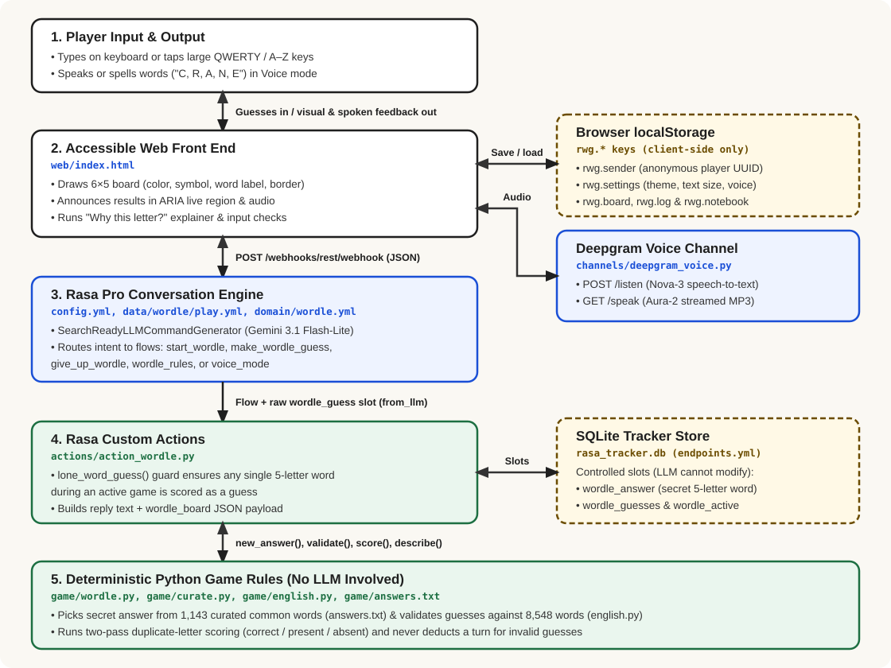

Lexi's Word Game is a relaxing, accessible Wordle-style puzzle designed for older adults (age 60+). While New York Times (NYT) Wordle is a widely enjoyed daily ritual, its interface assumes perceptual, motor, and cognitive baselines that create friction or exclusion for many older players (W3C WCAG 2.1; National Institute on Aging; Nielsen Norman Group, Usability for Senior Citizens):
| NYT Wordle Barrier | Impact on Older Adults | How Lexi's Word Game Removes It |
|---|---|---|
| Color-only tile feedback (green, yellow, gray) | Age-related lens yellowing and color-vision deficiencies make hues hard to tell apart. | Every scored tile pairs color with a symbol (✓, ●, ✕), a plain-English label (Right, In word, Not in), a distinct border style (solid, dashed, dotted), and strikethrough on absent letters, plus a zero-hue monochrome mode. |
| Small, fixed typography and tight keys | Presbyopia, low vision, and mild hand tremor make small text and closely packed keys tiring or error-prone. | Uses Atkinson Hyperlegible at 112.5% base size with Large (1.2×) and Extra large (1.4×) settings, fluid rem scaling at 200% zoom, and controls ≥ 44 × 44 px in QWERTY or alphabetical (A–Z) order. |
| Keyboard/touch-only entry | Arthritis, tremor, or unfamiliarity with on-screen keyboards can make typing slow or uncomfortable. | Multi-modal input: players can type on a physical keyboard, tap large on-screen keys, press Speak, or use hands-free Voice mode to say a word ("crane") or spell it out ("C, R, A, N, E"). |
| High working-memory load | Remembering which duplicate letters are already accounted for or why a tile was scored a certain way taxes working memory. | Clicking or arrow-keying to any scored tile opens the "Why this letter?" explainer (in text and speech), alongside a persistent Letter notebook and full conversation log. |
| Unforgiving daily format and streak pressure | One puzzle a day, win-streak counters, and no graceful exit when stuck can turn a casual puzzle into a test. | Unlimited games with no timers and no streaks, curated everyday answers, zero penalty for unknown or mistyped words, and a gentle "I give up" option that kindly reveals the word. |
Lexi is framed as a patient, encouraging companion rather than a judge. Following the Microsoft Guidelines for Human-AI Interaction (clear capabilities, graceful error recovery, and appropriate division of control), the architecture strictly separates conversational understanding from deterministic game rules:

SearchReadyLLMCommandGenerator (powered by gemini-3.1-flash-lite with automatic retry routing) interprets flexible natural language—such as "my guess is crane", "how do I play?", or "can I talk to you?"—so players never have to memorize rigid commands.controlled slots (wordle_answer, wordle_guesses, wordle_active) updated exclusively by deterministic Python in actions/action_wordle.py and game/wordle.py. In addition, the NLG rephraser prompt (prompts/rephraser_demo_personality_prompt.jinja2) enforces a strict constitutional rule never to invent word validity, letter counts, letter positions, remaining guesses, or the secret answer.All seven core requirements are implemented in game/wordle.py, game/curate.py, and actions/action_wordle.py:
wordle.new_answer() selects a random 5-letter word from game/answers.txt when ActionStartWordle runs. On the web page, a new game starts automatically on first load, and the secret word is omitted from the wordle_board JSON payload until status changes from "playing" to "won" or "lost".MAX_GUESSES = 6. Keeping six guesses preserves familiarity for players who have seen NYT Wordle with family members, while pairing those six turns with a curated common-word pool, zero penalty for invalid or repeated guesses, and a no-shame "I give up" button so six tries feel supportive rather than restrictive.english.py: ALLOWED precomputes a Python set of all 8,548 five-letter alphabetic words in ENGLISH_WORDS from game/english.py for O(1) lookup while keeping every valid 5-letter word in english.py playable as a guess.wordle.normalize() strips spaces and hyphens and lowercases input so "C R A N E" and "crane" work identically. wordle.validate() checks for empty input, non-letter characters, words shorter or longer than 5 letters, and words not in ALLOWED. score_guess() also catches duplicate guesses already tried in the same game. Invalid or repeated guesses return a clear, polite explanation, leave wordle_guesses unchanged, keep typed letters in the input box for easy editing, and append a spelling tip when on a voice channel.wordle.score(guess, answer) uses a deterministic two-pass algorithm adapted from an earlier Wordle implementation. Pass 1 marks exact position matches as correct and replaces matched letters in a working copy of answer with "*". Pass 2 marks non-correct letters as present only if an unmatched copy remains in the working list, crossing off each matched copy as it is used (e.g., guessing SPEED against ABIDE marks only the first E as present and the second E as absent). wordle.keyboard_state() tracks the highest state seen per letter (absent < present < correct) so a key never downgrades once found in the right spot.wordle.end_message() announces wins with the answer and guess count and losses gently. The web page also opens a game-over summary modal (#end-dlg) with a miniature board recap and a focused Play again button, and players can restart any time by clicking New game or saying "yes" / "new game".english.py contains 8,548 five-letter words—including obscure terms, inflections, proper nouns, and slurs—game/curate.py builds game/answers.txt through a reproducible four-step pipeline (all 8,548 words remain valid as guesses):| Step | Filter Applied in game/curate.py |
Words Left |
|---|---|---|
| 1 | All 5-letter alphabetic words in english.py (ALLOWED) |
8,548 |
| 2 | Keep common everyday words with wordfreq Zipf frequency ≥ 3.5 (~3+ occurrences per million words) |
1,740 |
| 3 | Drop simple plurals (-s, -es, -ies) and regular past tenses (-ed, -ied) whose base word is in english.py |
1,248 |
| 4 | Remove 105 manually reviewed words in REMOVE: slurs/crude terms, upsetting violent/medical words (death, tumor, abort), personal/place/brand names, and British spellings/slang |
1,143 |
The web front end (web/index.html, documented in web/README.md) implements all three accessibility priorities following WCAG 2.1 Level AA/AAA criteria:
✓, ●, ✕), (3) an explicit word label on the tile (Right, In word, Not in), and (4) a distinct border (4px solid for Right, 4px dashed for In word, 3px dotted plus strikethrough letter text for Not in). Players can switch between Colors, symbols, and words (standard), Symbols and words only (mono, zero hue—a built-in grayscale verification), and High contrast, dark background (dark). Across all three themes, WCAG 2.1 contrast ratios exceed 4.5:1 for all text (6.17:1–16.48:1 in standard, 9.94:1–18.88:1 in mono, and 8.21:1–21.00:1 in dark) and exceed 3:1 for all tile edges, control borders, and focus rings (4.28:1–21.00:1). Plain-language summaries from wordle.describe() are announced via an aria-live="polite" status region (#status) and per-row .sr-only labels.Backspace to delete, Enter to submit, roving tabIndex with arrow-key navigation across scored tiles, a 4px solid :focus-visible outline with 3px offset, and a Skip to the guess box link). All buttons and keys enforce min-height: 2.75rem; min-width: 2.75rem (≥ 44 × 44 px). Destructive actions (I give up and Start fresh for a new player) ask for confirmation in a modal dialog.rem sizing, and clamp() board dimensions that reflow cleanly at 200% zoom without horizontal scrolling. Prior guesses remain on the board, the full chat history stays visible with a Repeat last message button, a How to play dialog with a live tile legend opens automatically on first visit and remains accessible via Help, and all settings persist in localStorage.Lexi's Word Game implements seven enhancements across Categories A, B, and C (exceeding the requirement of three enhancements across two categories):
explainTile(r, c), which displays and speaks a plain-language explanation tailored to that exact tile—explicitly explaining duplicate-letter cases when a second copy of a letter is marked Not in because the secret word's only copy is already counted at another position.#notebook) with a Clear notebook button lets players jot down candidate letters or word fragments beside the board without affecting gameplay, saved in localStorage.channels/deepgram_voice.py proxies audio through the Rasa server to Deepgram Nova-3 (/webhooks/deepgram/listen) and streams natural Deepgram Aura-2 (aura-2-thalia-en) speech back (/webhooks/deepgram/speak, starting playback at 0.95× speed in ~0.3 s). Silence detection waits until the player speaks and pauses for 1.2 seconds (up to 15 s) so slower speech is not cut off, and regex normalization joins spelled-out letters ("C, R, A, N, E" → "CRANE"). The header 🎙️ Voice mode button enables a continuous hands-free loop where Lexi reads each reply aloud and automatically listens for the player's next turn.✓, ●, ✕).Normal, Large, Extra large), read-aloud output, and animation reduction (data-motion="reduce" and prefers-reduced-motion).rasa_tracker.db) keyed by an anonymous UUID (rwg.sender), while the browser saves the board, chat log, settings, and notebook in localStorage. Reloading restores the exact mid-game state, and Settings → Start fresh for a new player resets the device for the next workshop participant.We evaluated the game using live usability playtesting (with anonymous interaction logs captured in rasa_tracker.db across multiple sessions on November 12–13 following our pre-workshop demo script) combined with simulated-impairment and heuristic checks (grayscale/monochrome verification, WCAG 2.1 contrast calculation, 200% zoom reflow, keyboard-only navigation, and Microsoft Human-AI Interaction guidelines).
What worked well:
SEPNO, SWENE, and SENNE before solving SCENE → SPENT in 4 guesses, or testing BAFLY, TARLY, and BARLY while searching for MANLY). Because invalid words never cost a guess and immediately showed a brief toast note over the board, players experimented freely and completed multiple back-to-back games (SPENT in 4, DEALT in 5, VIDEO in 5).CHEAT, WOMAN, IRONY, MAYBE), they used I give up and immediately replied "Yes" or clicked Play again to start another round.Issues discovered during testing and how we fixed them:
"hello can you hear me" (rasa_tracker.db, Nov 12 14:45), and the LLM extracted "HELLO" as a 5-letter guess, costing a turn—prompting the tester to reply, "you shouldn't just take the first word no should you". Fix: Tightened make_wordle_guess in data/wordle/play.yml so multi-word sentences or questions are never treated as guesses unless the player explicitly names a word to guess, while a lone word like "HELLO" on its own remains a valid guess."ABORT" (Nov 12 15:20), the LLM routed it to give_up_wordle, prematurely ending the game and revealing "AMONG". Similarly, typing "Really" (15:13) triggered start_wordle. Fix: Added lone_word_guess(tracker) in actions/action_wordle.py inside ActionStartWordle and ActionGiveUp so any single 5-letter alphabetic word during an active game is deterministically scored as a guess, and removed "abort" from the secret answer list (REMOVE in game/curate.py)."is there a voice mode" in chat (Nov 12 14:39) and hit the fallback message. Fix: Added the voice_mode flow (data/wordle/play.yml and utter_voice_mode in domain/wordle.yml) with interactive chat buttons (🎙️ Start voice mode and 🔊 Read aloud only) and placed a prominent 🎙️ Voice mode toggle button in the top navigation bar."--=-", ",,,bravt") and speech-to-text number homophones ("80 I e u" for "ADIEU"), while starting at Large text pushed the bottom of the keyboard below the fold on 13-inch laptops. Fix: Restricted keyboard tile input to letters only (currentLetters()), added the voice spelling tip (SPELL_TIP), and set the default text size to Normal (112.5% / 18px) while keeping Large and Extra large in Settings."80 I e u" or "a view" → "ADIEU") against ALLOWED before rejecting would make single-word voice guessing even more forgiving without requiring the player to spell the word out.game/wordle.py—first a vowel count clue ("The word has 2 vowels"), then revealing one unguessed letter position if requested—would bridge the gap between "Why this letter?" and "I give up".#end-dlg) and saving solved words to a local "Words I've Found" journal would add lasting reflection value after each round.